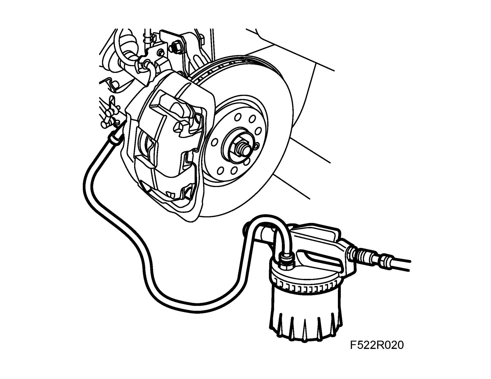

Brake Bleeding: Service and Repair
Bleeding the brake systemTightening torque for air nipple 16 Nm (12 lbf ft)
1. Open the cap on the brake fluid reservoir and top up with brake fluid.
2. Raise the car. Connect the bleeder hose to the air nipple on the front left brake caliper and open the nipple. Drain about 100 ml brake fluid. Use 88 19 096 Bleeding equipment.
Top up with fluid in the brake fluid reservoir.

Note
Top up after each time the fluid is drained.
3. Tighten the nipple, fit the rubber plug, move the brake bleeder to the air nipple on the rear right brake caliper and open the nipple. Drain about 50 ml brake fluid.
Top up with fluid in the brake fluid reservoir.
4. Tighten the nipple, fit the rubber plug, move the brake bleeder to the air nipple on the front right brake caliper and open the nipple. Drain about 100 ml brake fluid.
Top up with fluid in the brake fluid reservoir.
5. Tighten the nipple, fit the rubber plug, move the brake bleeder to the air nipple on the rear left brake caliper and open the nipple. Drain about 50 ml brake fluid.
Top up with fluid in the brake fluid reservoir.
6. Tighten the nipple, fit the rubber plug and lower the car to the floor.
7. Check the operation of the brakes. Depress the brake pedal and check that it does not feel spongy or go all the way down to the floor.
8. Check the brake fluid level and adjust as necessary.